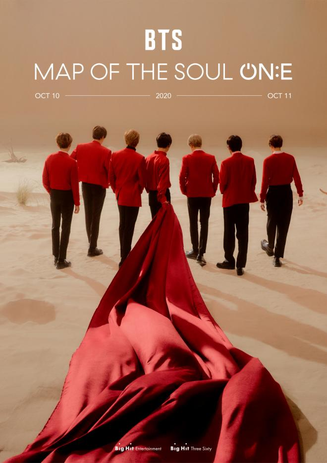
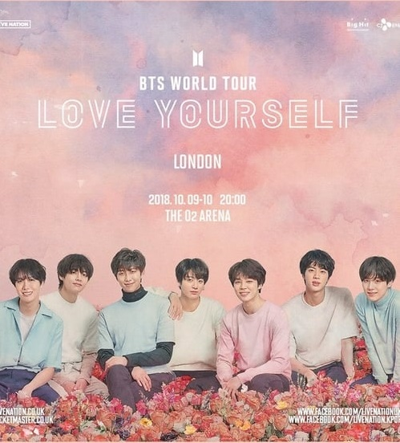
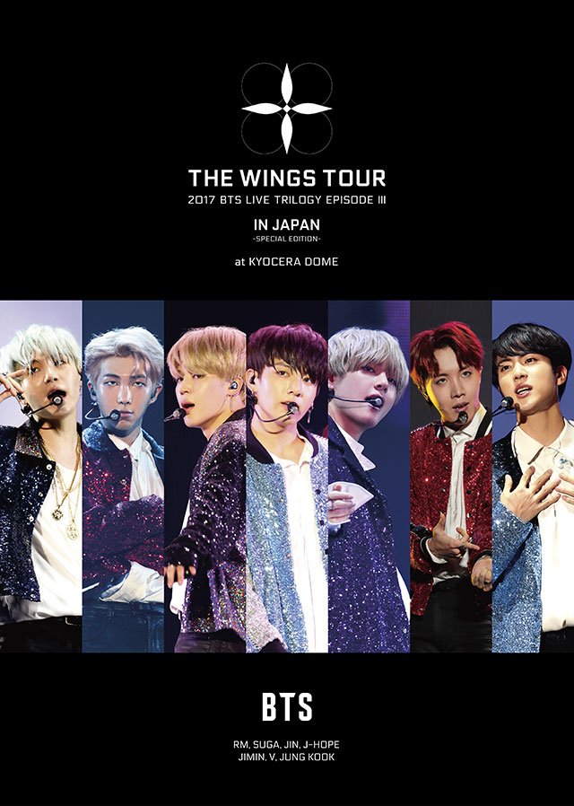
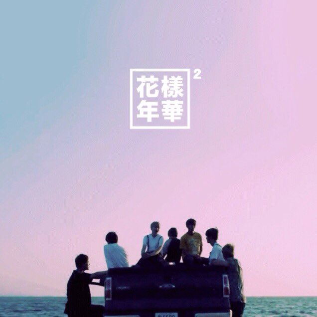
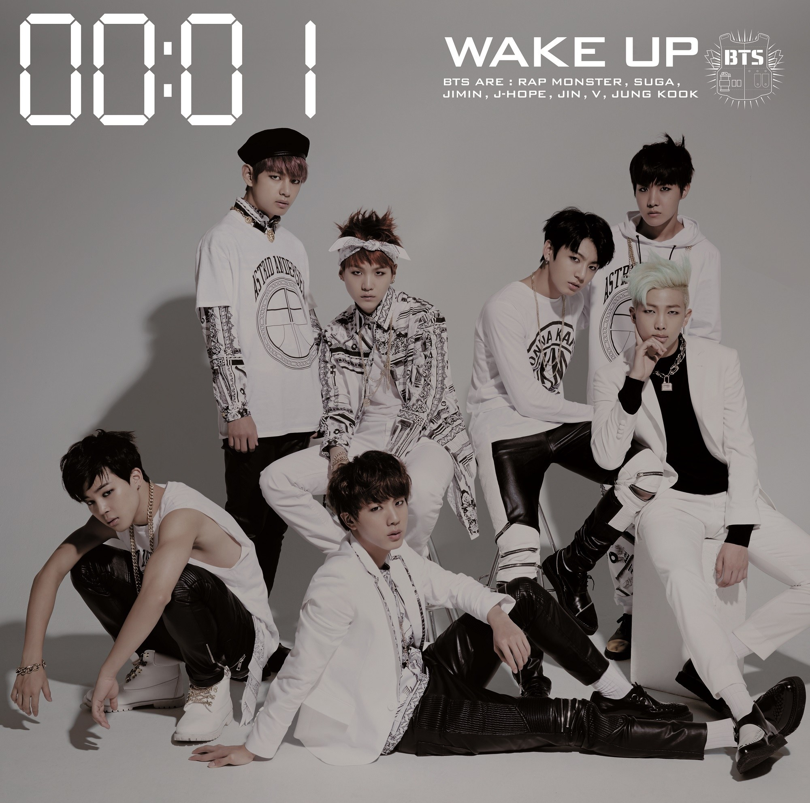
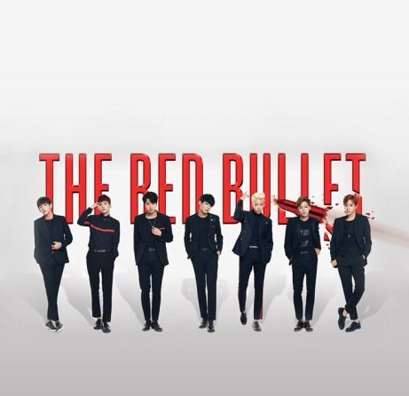

MAP OF THE SOUL ON:E

Photo by Big Hit Entertainment
Group meets fans from all over the world with an online concert. On The 10th and 11th, the Band will hold an online concert "BTS MAP OF THE SOUL ON:E" in Seoul.
With more than 756,600 simultaneous viewers in 107 regions,BangbangCon. The Live set a Guinness World Record for "live streaming music concerts seen by the most viewers" in 107 regions.
Map of the Soul Tour, is the fourth upcoming worldwide concert tour headlined by South Korean band BTS to promote their Map of the Soul series, including their Map of the Soul: Persona EP, and Map of the Soul: 7 studio album.
The all-stadium tour was announced on January 22, 2020 and was set to begin on April 11, 2020 at the Seoul Olympic Stadium in Seoul, South Korea until it was postponed due to the coronavirus pandemic.
A two-day online concert, titled BTS Map of the Soul ON:E, was held on October 10-11, 2020 in replacement of the postponed world tour. In total, the concert had an attendance of 993,000 viewers from 191 countries and territories.
This is their second online concert after Bang Bang Con: The Live.
LOVE YOURSELF TOUR

Photo by Big Hit Entertainment
Love Yourself, commonly known as the Love Yourself World Tour, was the third worldwide concert tour headlined by South Korean band BTS to promote their Love Yourself series, including their Love Yourself: Her EP, Love Yourself: Tear studio album, and Love Yourself: Answer compilation album.
The tour began on August 25, 2018 in South Korea. A stadium extension to the tour, titled BTS World Tour Love Yourself: Speak Yourself, was added on February 9, 2019 and began in Pasadena, California on May 4, 2019. The tour concluded on October 29, 2019, comprising 62 concerts in 14 countries.
The Love Yourself World Tour ranked at number three on Billboard's 2019 Year End Top 40 Tours chart worldwide, with a worldwide gross of $196.4 million from the last 42 shows of the tour. In total, the tour was attended by 2,019,800 people, becoming BTS' most successful tour to date and the highest-grossing concert tour by an act that performs primarily in a non-English language, as reported by Billboard.
THE WINGS TOUR

Photo by Big Hit Entertainment
The Wings Tour, also known as 2017 BTS Live Trilogy Episode III (Final Chapter): The Wings Tour, was the second worldwide concert tour headlined by the South Korean boy band BTS to promote their second Korean studio album, Wings (2016).
The tour began on February 18, 2017 and concluded on December 10, 2017 in South Korea. It visited 12 countries including Brazil, Australia, Japan, Hong Kong, and the United States. The tour gathered 550,000 fans, making it the band's second biggest tour to date.
THE MOST BEAUTIFUL MOMENT OF LIFE

Photo by Big Hit Entertainment
The Most Beautiful Moment in Life On Stage Tour, also known as the 2015 BTS LIVE "The Most Beautiful Moment in Life On Stage", was the third concert tour headlined by South Korean boy band BTS to promote their The Most Beautiful Moment in Life series, including their EP's The Most Beautiful Moment Life, Pt.1, Pt. 2 (2015) and the compilation album The Most Beautiful Moment in Life: Young Forever (2016)..
The tour began on November 27, 2015 in South Korea. An extension to the tour, titled 2016 BTS LIVE "The Most Beautiful Moment in Life On Stage: Epilogue" began in South Korea on May 7, 2016. In all, the entire tour attracted over 182,500 spectators at 13 cities in 7 countries.
WAKE UP

Photo by Big Hit Entertainment
Wake Up is the first Japanese studio album and second studio album overall by South Korean boy band BTS, which was released on December 24, 2014. The album features 13 tracks, including the Japanese versions of "No More Dream", "Boy in Luv", and "Danger", as well as two original Japanese songs: "The Stars" and "Wake Up". The album peaked at number two on Oricon Charts.
THE RED BULLET

Photo by Big Hit Entertainment
The Red Bullet Tour, also known as 2014 BTS Live Trilogy Episode II: The Red Bullet and 2015 BTS Live Trilogy Episode II: The Red Bullet, was the first concert tour headlined by South Korean boy band BTS to promote their 2 Cool 4 Skool (2013) debut single album, O!RUL8,2? (2013) EP, Skool Luv Affair (2014) EP, and Dark & Wild (2014) studio album. The tour began on October 17, 2014 in South Korea and initially visited 6 cities in Asia. Its world tour extension began on June 6, 2015 in Malaysia and toured Australia, North America and Latin America before ending in Hong Kong that August. In all, the entire tour attracted 80,000 spectators at 18 cities in 13 countries.